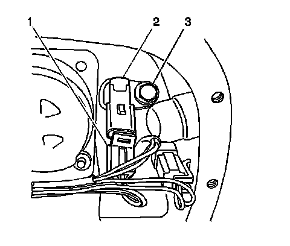
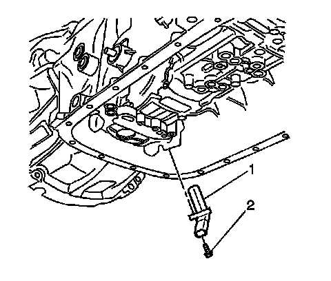

Input Speed Sensor Replacement
Input Speed Sensor Replacement
Removal Procedure
1. Remove the transmission fluid pan and filter. Refer to Automatic Transmission Fluid and Filter Replacement (Removal and Replacement) .

2. Disconnect the electrical wiring harness connector (1) from the input speed sensor (2).

3. Remove the input speed sensor bolt (2).
4. Remove the input speed sensor (1).
5. Inspect the input speed sensor (1) for the following conditions:
* Damaged or missing magnet
* Damaged housing
* Bent or missing electrical terminals
* Metal contamination stuck to magnet
Installation Procedure
1. Install the input speed sensor (1).
Notice: Refer to Fastener Notice (Fastener Notice) .
2. Install the input speed sensor bolt (2).
Tighten the input speed sensor bolt to 11 N.m (97 lb in).
3. Connect the electrical wiring harness connector (1) to the input speed sensor (2).
4. Install the transmission fluid pan and filter. Refer to Automatic Transmission Fluid and Filter Replacement (Removal and Replacement) .